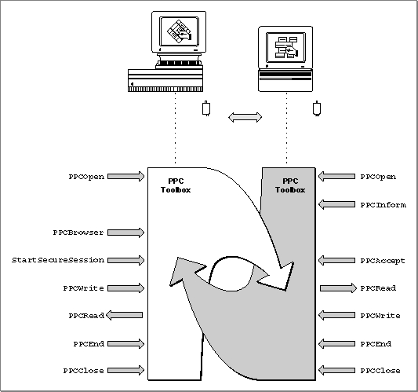

Legacy Document
Important: The information in this document is obsolete and should not be used for new development.
Important: The information in this document is obsolete and should not be used for new development.


Using the PPC Toolbox
This section describes how to
To begin, you must determine whether the PPC Toolbox is available on the user's computer system by using the
- use PPC Toolbox calling conventions
- open a port
- list all available port locations on the network
- indicate that a port is available to accept session requests
- initiate a session
- accept and reject session requests
- read and write data during a session
- end a session after data is transmitted and received
- close a port when it is no longer needed to transmit or receive data
- invalidate users
Gestaltfunction with the selectorgestaltPPCToolboxAttr. AnoErrresult code indicates that the PPC Toolbox is present.The
Gestaltfunction returns a combination of the following constants in theresponseparameter:gestaltPPCToolboxPresent,gestaltPPCSupportsRealTime,gestaltPPCSupportsOutGoing, andgestaltPPCSupportsIncoming.The PPC Toolbox currently supports only sessions in real time. The
Gestaltfunction returnsgestaltPPCSupportsRealTimeby default. If this bit is not set, you need to initialize the PPC Toolbox.The
Gestaltfunction returnsgestaltPPCSupportsOutGoingto indicate support of outgoing sessions across a network of Macintosh computers. If this bit is not set, the user hasn't enabled AppleTalk in the Chooser.The
Gestaltfunction returnsgestaltPPCSupportsIncomingif the user has enabled program linking in the Sharing Setup control panel. If this bit is not set, the user either hasn't enabled AppleTalk in the Chooser or hasn't enabled program linking in the Sharing Setup control panel.Use the
PPCInitfunction to initialize the PPC Toolbox.
err := PPCInit;Listing 11-1 illustrates how you use thePPCInitfunction to initialize the PPC Toolbox.Listing 11-1 Initializing the PPC Toolbox using the
PPCInitfunction
FUNCTION MyPPCInit: OSErr; VAR PPCAttributes: LongInt; err: OSErr; BEGIN err := Gestalt(gestaltPPCToolboxAttr, PPCAttributes); IF err = noErr THEN {PPC Toolbox is present} BEGIN IF BAND(PPCAttributes, gestaltPPCSupportsRealTime) = 0 THEN BEGIN MyPPCInit := PPCInit; {initialize the PPC Toolbox} {test the attributes for the PPC Toolbox} err := Gestalt(gestaltPPCToolboxAttr, PPCAttributes); END; IF BAND(PPCAttributes, gestaltPPCSupportsOutGoing) <> 0 THEN {ports can be opened to the outside world} ELSE {it's likely that AppleTalk is disabled, so you } ; { may want to tell the user to activate AppleTalk } { from the Chooser} IF BAND(PPCAttributes, gestaltPPCSupportsIncoming) <> 0 THEN {ports can be opened with location names that the } { outside world can see} ELSE {it's likely that program linking is disabled, so } ; { you may want to tell the user to start program } { linking from the Sharing Setup control panel} END ELSE MyPPCInit := err; END;Figure 11-9 illustrates a spreadsheet application (on the left) that has initiated a session with a database application (on the right) to exchange data using the PPC Toolbox. This figure includes an example of the sequence of PPC Toolbox routines executed by these applications. Detailed descriptions of the functions appear in the sections that follow.Figure 11-9 Database and spreadsheet applications using the PPC Toolbox

To establish a session, each application must first open a port using the
PPCOpenfunction. The spreadsheet application prepares to receive session requests by calling thePPCInformfunction.Before initiating a session or opening a port, the database application can let the user browse through the list of available ports (using the
PPCBrowserfunction). If the user decides to communicate with the spreadsheet application, the database application initiates a session with the spreadsheet application's port using theStartSecureSessionfunction. After the PPC Toolbox authenticates the user name and password of the initiating port, the spreadsheet application accepts the session request (using thePPCAcceptfunction).Once the session is established, the applications exchange information in the form of message blocks (using the
PPCReadandPPCWritefunctions). During a session, an application can both read from and write message blocks to another application. After the information exchange is done, each application ends the session (PPCEnd) and then closes its port (PPCClose) when it quits.The
PPCOpenfunction returns a port reference number. The port reference number is a reference number for the port through which you are requesting a session. The database application uses the port reference number in subsequent calls to theStartSecureSessionandPPCClosefunctions. TheStartSecureSessionfunction returns a session reference number. The session reference number is used to identify the session during the exchange of data. It is used in subsequent calls to thePPCWrite,PPCRead, andPPCEndfunctions.The
PPCOpenfunction returns a port reference number that the spreadsheet uses in subsequent calls to thePPCInformandPPCClosefunctions. ThePPCInformfunction returns a session reference number that is used in subsequent calls to thePPCAccept,PPCRead,PPCWrite, andPPCEndfunctions.
Subtopics
- PPC Toolbox Calling Conventions
- Specifying Port Names and Location Names
- Preparing for a Session
- Exchanging Data During a PPC Session
- Ending a Session and Closing a Port
- Invalidating Users